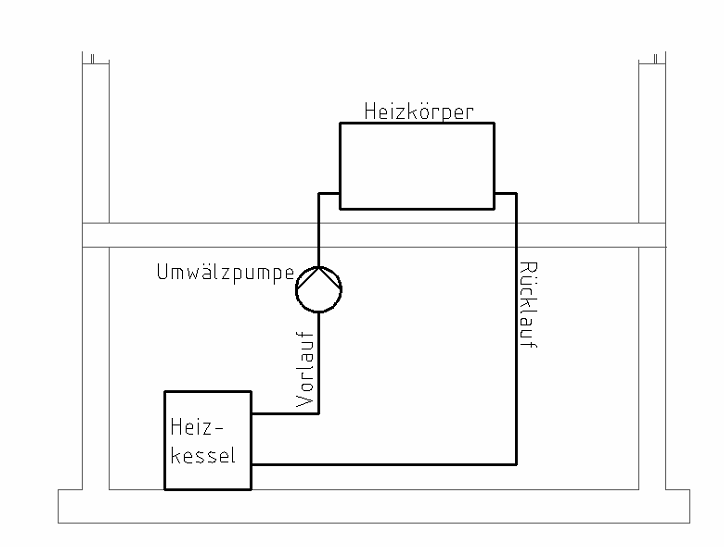

3 Heizungskreislauf
- Der Heizkessel erhitzt das Heizungswasser.
- Die Umwälzpumpe befördert das warme Wasser zu den Heizkörpern. Diese Leitung heißt Vorlauf.
- Im Heizkörper kühlt das Wasser ab. Dabei gibt es die Wärme an den Raum ab.
- Das abgekühlte Wasser fließt zurück zum Heizkessel. Diese Leitung heißt Rücklauf.
Den Heizkörper nennt man auch Verbraucher (Wärmeverbraucher).
Der Heizkessel kann z. B. mit Gas, Öl, Holz oder Pellets heizen. Pellets sind kleine, gepresste Holzstücke.

Geschlossener Kreislauf: Es ist immer dasselbe Wasser. Es fließt im Kreis: vom Heizkessel zu den Heizkörpern und wieder zurück.
Leitungskennfarben
Bei der Heizung gelten andere Farben als beim Trinkwasser:
| Leitung | Kennfarbe |
|---|---|
| Vorlauf (warm) | rot |
| Rücklauf (abgekühlt) | blau |
Tippe die richtige Antwort an. Dann tippe auf „Prüfen“.
Grün = richtig, Rot = schau noch einmal.
Aufgabe 1
Lückentext: Tippe in jedem Satz das richtige Wort an.
Die Heizung soll im Haus erzeugen.
Dafür wird das Wasser im aufgeheizt. Er kann z. B. mit Gas, Pellets, Holz oder Öl betrieben werden.
Eine befördert das heiße Wasser (= ) zum .
Dieser gibt die Wärme im Raum ab.
Dabei kühlt sich das Wasser ab. Es fließt als zurück zum Heizkessel.
Weil immer dasselbe Wasser verwendet wird, spricht man von einem Kreislauf.
Aufgabe 2
Welche Kennfarbe hat die Leitung?
| Vorlauf | |
| Rücklauf |
Aufgabe 3
Was macht das Bauteil?
| Heizkessel | |
| Umwälzpumpe | |
| Heizkörper |
Aufgabe 4
Offen oder geschlossen?
| Heizungskreislauf | |
| Trinkwasser (Kalt- und Warmwasser) |